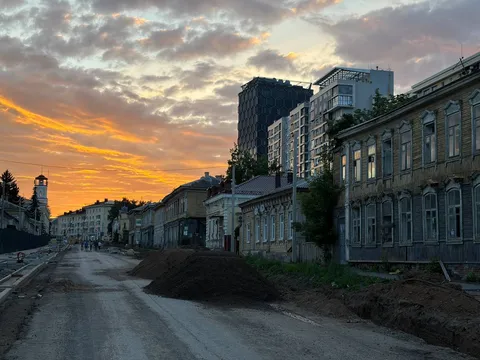
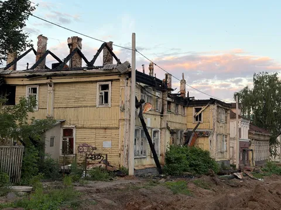
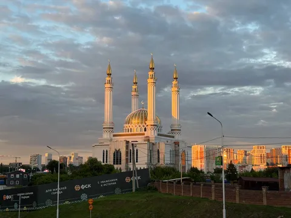
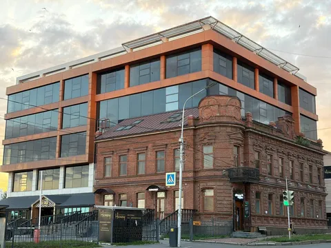
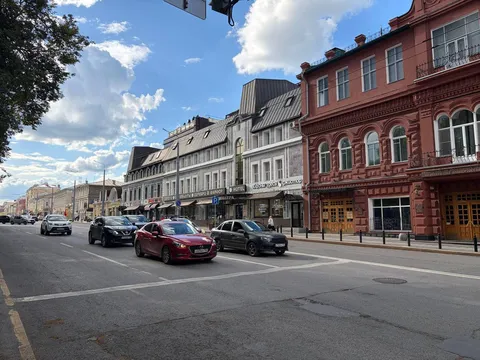

Пересекли границу континентов. После более степенной и серьезной Сибири Уфа показалась по-европейски суетной и хаотичной. Но от того не менее классной. Такая же эклектичная, как Екат, но более цветастая и взбалмошная. Еще больше стилей вперемешку - ведь тут добавляется мусульманский колорит (интересный факт: татар в Уфе больше, чем башкир).
Очень впечатлились улицей Октябрьской революции. Там сохранилась целая улица старинных маленьких домиков. Сейчас их все расселили, улицу перекрыли, и делают что-то арбат-лайк с реставрацией этих домиков. Но в моменте - там нет людей, нет машин, нет коммерции, зато есть полное ощущение очень русского пост-апокалипсиса с обгоревшими срубами, заколоченными окнами и поросшими бурьяном порогами.
В Уфе почти нет типовой советской застройки, примерно все дома - по индивидуальному проекту, и это очень классно. А самые классные проекты - это полный кастом, когда новое здание аккуратно и незаметно обстраивают вокруг какого-то старого - таких проектов тут немало. Итого - полный рәхмәт, советую побывать.




